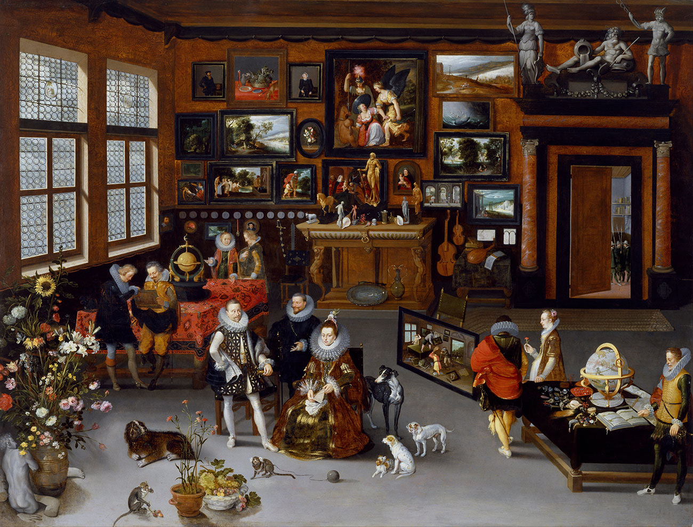

< Home
3 >
When you come through the glass doors...
...walk up the first set of marble steps and take a left.
Walk through the "17th-Century Durch Cabient Rooms" door. From the center of the room, walk through the first doorway on your right to the enter: THE CHAMBER OF WONDERS
